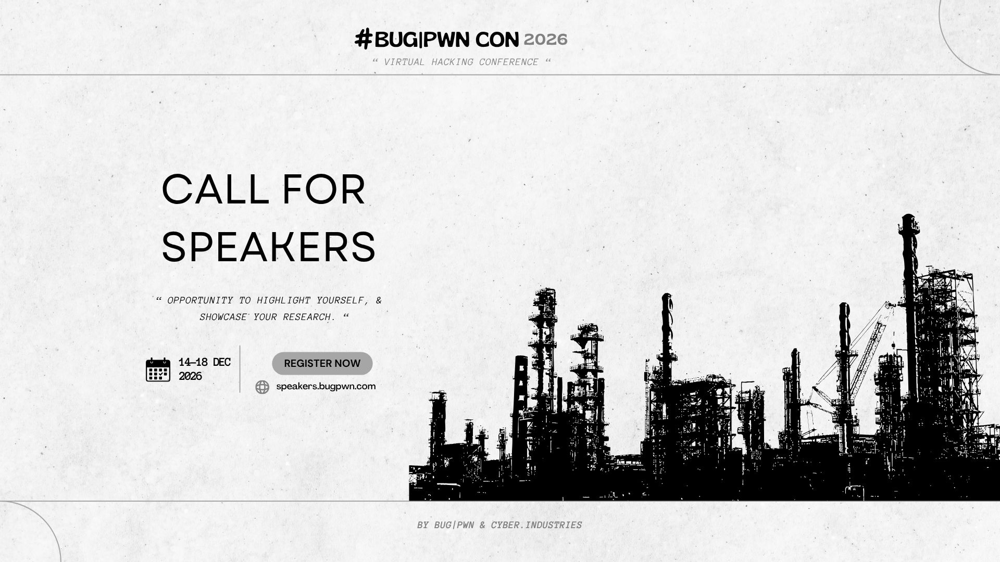

Conférence 100% virtuelle dédiée à l'élite de la recherche en sécurité. Talks techniques, démos de 0-days et workshops interactifs, du 14 au 18 décembre 2026.

Une opportunité de vous faire connaître et de présenter vos recherches devant une audience internationale d'experts en sécurité.
Recherche offensive, 0-days, sécurité matérielle, OT/ICS, électronique et génie électrique, développement bas niveau et d'architecture.
Droit du cyber, cyberdéfense militaire, GRC, architecture cyber.
Développement sécurisé, automatisation industrielle, management d'équipes cyber, et plus encore.
Si vous avez quelque chose qui mérite d'être montré à cette audience, c'est ici que ça se passe.
En marge de la conférence, le battleCTF reste ouvert à tous : qualifications online le 05 octobre 2026, catégories Pwn, Web, OT/ICS, Vuln-Research.
Soumissions ouvertes jusqu'au 31 octobre 2026 pour l'édition 2026 de la BUG|PWN CON, organisée avec Cyber.Industries.
Soumettre_Mon_TalkNous sponsorisons des événements CTF, des projets de recherche en sécurité et des conférences qui privilégient le réalisme technique et l'innovation.
Envoyez votre dossier (Deck, Audience, Infrastructure) à notre unité de liaison.
Une fois validé, nous fournissons support financier, prix ou challenges exclusifs.
Associez votre marque à l'excellence. Sponsorisez la BUG|PWN CON pour accéder à une audience mondiale qualifiée d'experts en cybersécurité.
Exposition maximale auprès d'une communauté internationale de chercheurs, pentesters et ingénieurs en sécurité.
Identifiez et recrutez les meilleurs profils techniques directement lors de nos compétitions battleCTF.
Intégrez vos solutions ou infrastructures directement dans nos environnements de compétition et scénarios d'exploitation.